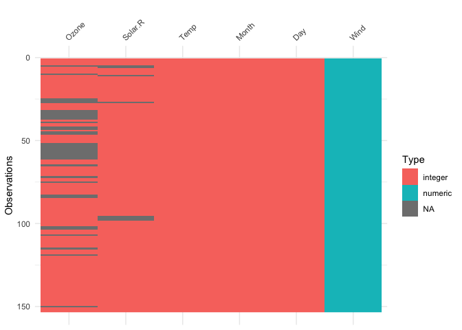
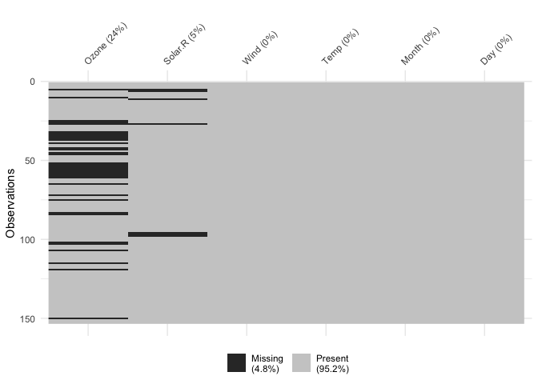
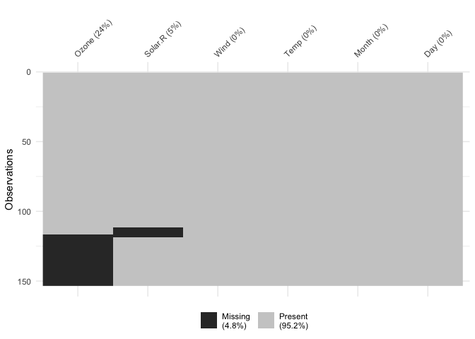
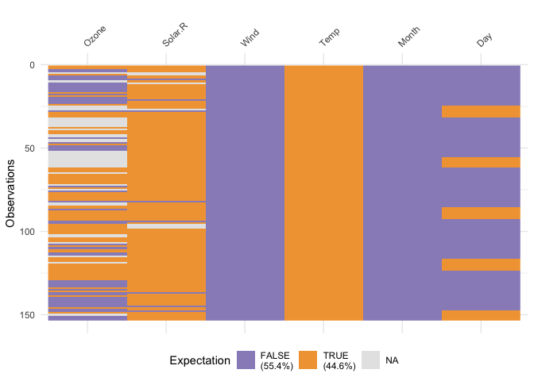
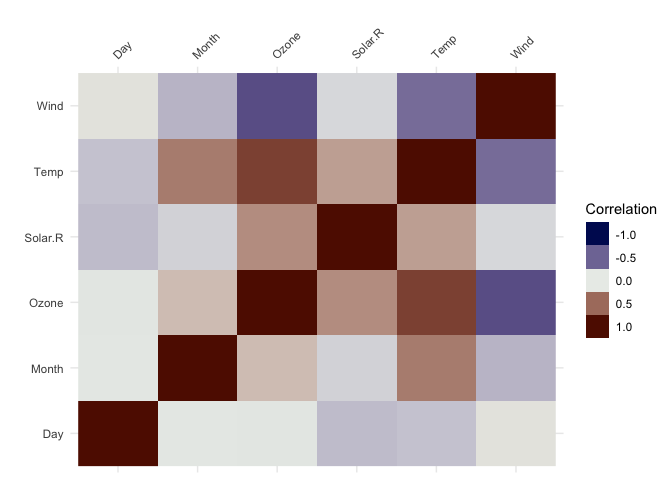
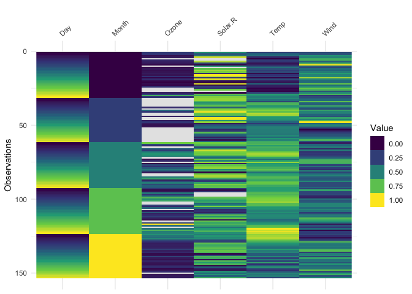
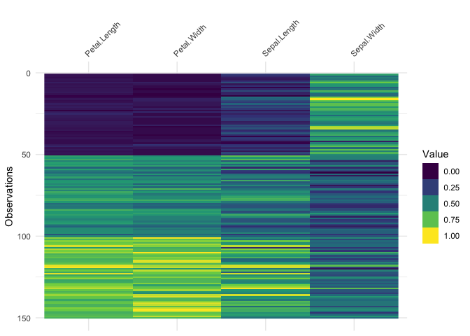
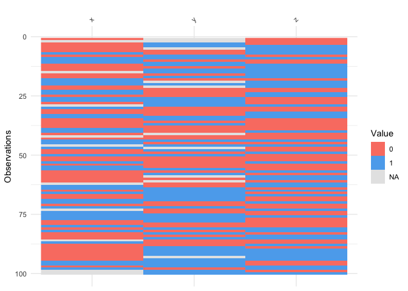
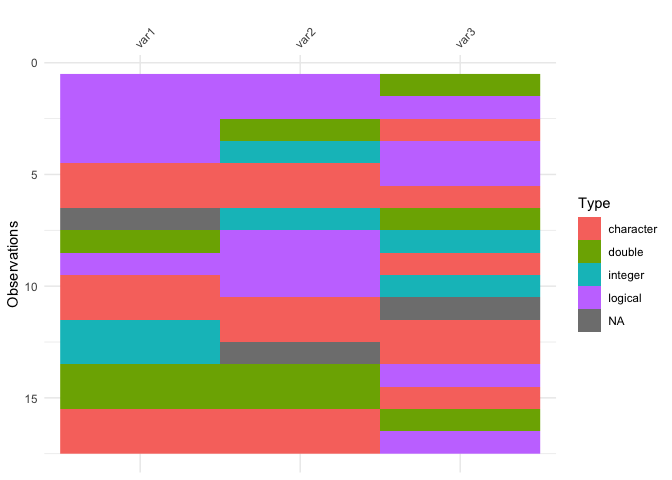

How to install
visdat is available on CRAN
install.packages("visdat")If you would like to use the development version, install from github with:
# install.packages("devtools")
devtools::install_github("ropensci/visdat")What does visdat do?
Initially inspired by csv-fingerprint, vis_dat helps you visualise a dataframe and “get a look at the data” by displaying the variable classes in a dataframe as a plot with vis_dat, and getting a brief look into missing data patterns using vis_miss.
visdat has 6 functions:
vis_dat()visualises a dataframe showing you what the classes of the columns are, and also displaying the missing data.vis_miss()visualises just the missing data, and allows for missingness to be clustered and columns rearranged.vis_miss()is similar tomissing.pattern.plotfrom themipackage. Unfortunatelymissing.pattern.plotis no longer in themipackage (as of 14/02/2016).vis_compare()visualise differences between two dataframes of the same dimensionsvis_expect()visualise where certain conditions hold true in your datavis_cor()visualise the correlation of variables in a nice heatmapvis_guess()visualise the individual class of each value in your datavis_value()visualise the value class of each cell in your datavis_binary()visualise the occurrence of binary values in your data
You can read more about visdat in the vignette, “using visdat”.
Code of Conduct
Please note that the visdat project is released with a Contributor Code of Conduct. By contributing to this project, you agree to abide by its terms.
Examples
Using vis_dat()
Let’s see what’s inside the airquality dataset from base R, which contains information about daily air quality measurements in New York from May to September 1973. More information about the dataset can be found with ?airquality.

The plot above tells us that R reads this dataset as having numeric and integer values, with some missing data in Ozone and Solar.R. The classes are represented on the legend, and missing data represented by grey. The column/variable names are listed on the x axis.
Using vis_miss()
We can explore the missing data further using vis_miss():
vis_miss(airquality)
Percentages of missing/complete in vis_miss are accurate to 1 decimal place.
You can cluster the missingness by setting cluster = TRUE:
vis_miss(airquality,
cluster = TRUE)
Columns can also be arranged by columns with most missingness, by setting sort_miss = TRUE:
vis_miss(airquality,
sort_miss = TRUE)
vis_miss indicates when there is a very small amount of missing data at <0.1% missingness:
test_miss_df <- data.frame(x1 = 1:10000,
x2 = rep("A", 10000),
x3 = c(rep(1L, 9999), NA))
vis_miss(test_miss_df)
vis_miss will also indicate when there is no missing data at all:
vis_miss(mtcars)
To further explore the missingness structure in a dataset, I recommend the naniar package, which provides more general tools for graphical and numerical exploration of missing values.
Using vis_compare()
Sometimes you want to see what has changed in your data. vis_compare() displays the differences in two dataframes of the same size. Let’s look at an example.
Let’s make some changes to the chickwts, and compare this new dataset:
set.seed(2019-04-03-1105)
chickwts_diff <- chickwts
chickwts_diff[sample(1:nrow(chickwts), 30),sample(1:ncol(chickwts), 2)] <- NA
vis_compare(chickwts_diff, chickwts)
Here the differences are marked in blue.
If you try and compare differences when the dimensions are different, you get an ugly error:
chickwts_diff_2 <- chickwts
chickwts_diff_2$new_col <- chickwts_diff_2$weight*2
vis_compare(chickwts, chickwts_diff_2)
# Error in vis_compare(chickwts, chickwts_diff_2) :
# Dimensions of df1 and df2 are not the same. vis_compare requires dataframes of identical dimensions.Using vis_expect()
vis_expect visualises certain conditions or values in your data. For example, If you are not sure whether to expect values greater than 25 in your data (airquality), you could write: vis_expect(airquality, ~.x>=25), and you can see if there are times where the values in your data are greater than or equal to 25:
vis_expect(airquality, ~.x >= 25)
This shows the proportion of times that there are values greater than 25, as well as the missings.
Using vis_cor()
To make it easy to plot correlations of your data, use vis_cor:
vis_cor(airquality)
Using vis_value
vis_value() visualises the values of your data on a 0 to 1 scale.
vis_value(airquality)
It only works on numeric data, so you might get strange results if you are using factors:
data input can only contain numeric values, please subset the data to the numeric values you would like. dplyr::select_if(data, is.numeric) can be helpful here!So you might need to subset the data beforehand like so:
library(dplyr)
#>
#> Attaching package: 'dplyr'
#> The following objects are masked from 'package:stats':
#>
#> filter, lag
#> The following objects are masked from 'package:base':
#>
#> intersect, setdiff, setequal, union
iris %>%
select_if(is.numeric) %>%
vis_value()
Using vis_binary()
vis_binary() visualises binary values. See below for use with example data, dat_bin
vis_binary(dat_bin)
If you don’t have only binary values a warning will be shown.
vis_binary(airquality)Using vis_guess()
vis_guess() takes a guess at what each cell is. It’s best illustrated using some messy data, which we’ll make here:
messy_vector <- c(TRUE,
T,
"TRUE",
"T",
"01/01/01",
"01/01/2001",
NA,
NaN,
"NA",
"Na",
"na",
"10",
10,
"10.1",
10.1,
"abc",
"$%TG")
set.seed(2019-04-03-1106)
messy_df <- data.frame(var1 = messy_vector,
var2 = sample(messy_vector),
var3 = sample(messy_vector))
So here we see that there are many different kinds of data in your dataframe. As an analyst this might be a depressing finding. We can see this comparison above.
Thank yous
Thank you to Ivan Hanigan who first commented this suggestion after I made a blog post about an initial prototype ggplot_missing, and Jenny Bryan, whose tweet got me thinking about vis_dat, and for her code contributions that removed a lot of errors.
Thank you to Hadley Wickham for suggesting the use of the internals of readr to make vis_guess work. Thank you to Miles McBain for his suggestions on how to improve vis_guess. This resulted in making it at least 2-3 times faster. Thanks to Carson Sievert for writing the code that combined plotly with visdat, and for Noam Ross for suggesting this in the first place. Thank you also to Earo Wang and Stuart Lee for their help in getting capturing expressions in vis_expect.
Finally thank you to rOpenSci and it’s amazing onboarding process, this process has made visdat a much better package, thanks to the editor Noam Ross (@noamross), and the reviewers Sean Hughes (@seaaan) and Mara Averick (@batpigandme).